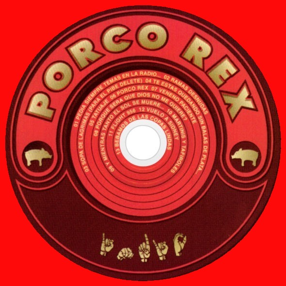

Porco Rex
Acerca de Porco Rex
Porco Rex es el segundo disco de la banda de rock argentino Los Fundamentalistas del Aire Acondicionado, liderada por el músico argentino Indio Solari, exvocalista de Patricio Rey y sus Redonditos de Ricota. Fue lanzado a la venta el jueves 6 de diciembre de 2007. El mismo fue grabado y editado en el estudio personal de Solari, Luzbola, y producido, al igual que el anterior, y los últimos trabajos de Los Redondos, de forma independiente. Este es el primer disco que realizó Solari junto a Gaspar Benegas, con quien se reemplazó la mayor parte de Julio Saéz en las guitarras. Solari aparece en los créditos del álbum bajo el seudónimo de «Monsieur Sandoz».
